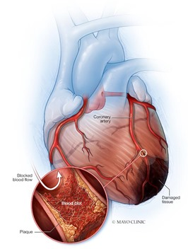
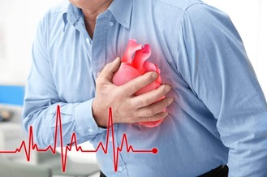

Conditions and Treatments |
|---|
|  |  |
A heart attack, also called a myocardial infarction, happens when a part of the heart muscle doesn’t get enough blood. The more time that passes without treatment to restore blood flow, the greater the damage to the heart muscle. Without blood flow, the affected heart muscle will begin to die. If you don’t get blood flow back quickly, a heart attack can cause permanent heart damage and/or death. A heart attack is a life-threatening emergency. If you think you or someone you’re with is having a heart attack, call local emergency services Time is critical in treating a heart attack. A delay of even a few minutes can result in permanent heart damage or death. A heart attack occurs when the flow of blood to the heart is severely reduced or blocked. The blockage is usually due to a buildup of fat, cholesterol and other substances in the heart (coronary) arteries. The fatty, cholesterol-containing deposits are called plaques. The process of plaque buildup is called atherosclerosis. Sometimes, a plaque can rupture and form a clot that blocks blood flow. A lack of blood flow can damage or destroy part of the heart muscle.
Causes
- Coronary artery spasm.
- Rare medical conditions, like any disease that causes unusual narrowing of blood vessels.
- Trauma that causes tears or ruptures in your coronary arteries.
- Obstruction that came from somewhere else in your body, like a blood clot or air bubble (embolism) that ends up in a coronary artery.
- Eating disorders. Over time, these can damage your heart and ultimately result in a heart attack.
- Anomalous coronary arteries (a heart issue you are born with where the coronary arteries are in abnormal positions. Compression of these causes a heart attack).
- Other conditions that can cause your heart not to receive as much blood as it should for a prolonged period of time, such as when blood pressure is too low, oxygen is too low or your heart rate is too fast.
Symptoms
Chest pain or discomfort. Most heart attacks involve discomfort in the center or left side of the chest that lasts for more than a few minutes or that goes away and comes back. The discomfort can feel like uncomfortable pressure, squeezing, fullness, or pain. Feeling weak, light-headed, or faint. You may also break out into a cold sweat. Pain or discomfort in the jaw, neck, or back. Pain or discomfort in one or both arms or shoulders. Shortness of breath. This often comes along with chest discomfort, but shortness of breath also can happen before chest discomfort. Chest pain (angina). Shortness of breath or trouble breathing. Trouble sleeping (insomnia). Nausea or stomach discomfort. Heart palpitations. Anxiety Feeling lightheaded, dizzy or passing out. Chest pain that may feel like pressure, tightness, pain, squeezing or aching Pain or discomfort that spreads to the shoulder, arm, back, neck, jaw, teeth or sometimes the upper belly Cold sweat Fatigue Heartburn or indigestion Lightheadedness or sudden dizziness
Treatment
- Electrocardiogram (ECG or EKG). This first test done to diagnose a heart attack records electrical signals as they travel through the heart. Sticky patches (electrodes) are attached to the chest and sometimes the arms and legs. Signals are recorded as waves displayed on a monitor or printed on paper. An electrocardiogram (ECG) can show if you are having or have had a heart attack. Certain heart proteins slowly leak into the blood after heart damage from a heart attack. Blood tests can be done to check for these proteins (cardiac markers).
- Chest X-ray. A chest X-ray shows the condition and size of the heart and lungs.
- Echocardiogram. Sound waves (ultrasound) create images of the moving heart. This test can show how blood moves through the heart and heart valves. An echocardiogram can help identify whether an area of your heart has been damaged.
- Coronary catheterization (angiogram). A long, thin tube (catheter) is inserted into an artery, usually in the leg, and guided to the heart. Dye flows through the catheter to help the arteries show up more clearly on images made during the test.
- Cardiac computed tomography (CT) or Magnetic resonance imaging (MRI). These tests create images of the heart and chest. Cardiac CT scans use X-rays. Cardiac MRI uses a magnetic field and radio waves to create images of your heart. For both tests, you usually lie on a table that slides inside a long tubelike machine. Each test can be used to diagnose heart problems. They can help show the severity of heart damage.
Pneumonia is an infection that inflames the air sacs in one or both lungs. The air sacs may fill with fluid or pus (purulent material), causing cough with phlegm or pus, fever, chills, and difficulty breathing. A variety of organisms, including bacteria, viruses and fungi, can cause pneumonia. Pneumonia can range in seriousness from mild to life-threatening. It is most serious for infants and young children, people older than age 65, and people with health problems or weakened immune systems. Bacterial pneumonia is usually more severe than viral pneumonia, which often resolves on its own. Pneumonia can affect one or both lungs. Pneumonia in both of your lungs is called bilateral or double pneumonia
Causes
Pneumonia can develop when your immune system attacks an infection in the small sacs of your lung (alveoli). This causes your lungs to swell and leak fluids. Many bacteria, viruses and fungi can cause infections that lead to pneumonia. Bacteria are the most common cause in adults and viruses are the most common cause in school-aged children. Common illnesses that can lead to pneumonia include:
- Influenza viruses
- Respiratory syncytial virus (RSV)
- SARS-CoV-2 (the virus that causes COVID-19)
- treptococcus pneumoniae (pneumococcus)
- Mycoplasma pneumoniae.
Symptoms
- a cough – you may cough up yellow or green mucus (phlegm)
- shortness of breath and a high temperature
- chest pain and an aching body
- feeling very tired and loss of appetite
- making wheezing noises when you breathe
- Lower than normal body temperature (in adults older than age 65 and people with weak immune systems)
Treatment
- Imaging: Your provider can use chest X-ray or CT scan to take pictures of your lungs to look for signs of infection.
- Blood tests: Your provider can use a blood test to help determine what kind of infection is causing your pneumonia.
- Sputum test: You’re asked to cough and then spit into a container to collect a sample for a lab to examine. The lab will look for signs of an infection and try to determine what’s causing it.
- Pulse oximetry: A sensor measures the amount of oxygen in your blood to give your provider an idea of how well your lungs are working.
- Pleural fluid culture: Your provider uses a thin needle to take a sample of fluid from around your lungs. The sample is sent to a lab to help determine what’s causing the infection.
- Arterial blood gas test: Your provider takes a blood sample from your wrist, arm or groin to measure oxygen levels in your blood to know how well your lungs are working.
- Bronchoscopy: In some cases, your provider may use a thin, lighted tube called a bronchoscope to look at the inside of your lungs. They may also take tissue or fluid samples to be tested in a lab.
Typhoid fever is an illness caused by the bacterium Salmonella Typhi (S. Typhi). It infects your small intestines (gut) and causes high fever, stomach pain and other symptoms. Typhoid fever is also called enteric fever. Paratyphoid fever is similar to typhoid with more mild symptoms. It’s caused by Salmonella Paratyphi (S. Paratyphi). S. Typhi and S. Paratyphi are different than the Salmonella bacteria that cause salmonellosis, a common type of food poisoning. Without treatment, there is a small chance of death from typhoid fever complications. Vaccines against typhoid fever can provide some protection. But they can't protect against all cases of illness caused by other strains of salmonella
Causes
Typhoid fever is caused by a type of bacteria called Salmonella typhi. This isn't the same bacteria that cause salmonella food poisoning, but they are related. Food and water with the bacteria in it cause typhoid fever. Close contact with a person who is carrying the salmonella bacteria also can cause typhoid fever.
Symptoms
- a persistent high temperature that gradually increases each day
- headache
- general aches and pains
- extreme tiredness (fatigue)
- cough
- Constipation
- tummy ache
- diarrhea
- Muscle aches
Treatment
- Body fluid or tissue culture. A sample of your blood, stool, urine or bone marrow is used. The sample is placed in an environment where bacteria grow easily. The growth, called a culture, is checked under a microscope for the typhoid bacteria. A bone marrow culture often is the most sensitive test for Salmonella typhi.
- A culture test is the most common diagnostic test. But other testing may be used to confirm typhoid fever. One is a test to detect antibodies to typhoid bacteria in your blood. Another test checks for typhoid DNA in your blood.
- Fluoroquinolones. These antibiotics, including ciprofloxacin (Cipro), may be a first choice. They stop bacteria from copying themselves. But some strains of bacteria can live through treatment. These bacteria are called antibiotic resistant.
- Cephalosporins. This group of antibiotics keeps bacteria from building cell walls. One kind, ceftriaxone, is used if there is antibiotic resistance.
- Macrolides. This group of antibiotics keeps bacteria from making proteins. One kind called azithromycin (Zithromax) can be used if there is antibiotic resistance.
- Carbapenems. These antibiotics also prevent bacteria from building cell walls. But they focus on a different stage of that process than the cephalosporins. Antibiotics in this category may be used with severe disease that doesn't respond to other antibiotics.
Diabetes is a chronic (long-lasting) health condition that affects how your body turns food into energy. Your body breaks down most of the food you eat into sugar (glucose) and releases it into your bloodstream. When your blood sugar goes up, it signals your pancreas to release insulin. Insulin acts like a key to let the blood sugar into your body’s cells for use as energy. Insulin is a hormone made by the pancreas that helps glucose get into your cells to be used for energy. If you have diabetes, your body doesn’t make enough—or any—insulin or doesn’t use insulin properly. Glucose then stays in your blood and doesn’t reach your cells. With diabetes, your body doesn’t make enough insulin or can’t use it as well as it should. When there isn’t enough insulin or cells stop responding to insulin, too much blood sugar stays in your bloodstream. Over time, that can cause serious health problems, such as heart disease, vision loss, and kidney disease. Chronic diabetes conditions include type 1 diabetes and type 2 diabetes. Potentially reversible diabetes conditions include prediabetes and gestational diabetes. Prediabetes happens when blood sugar levels are higher than normal. But the blood sugar levels aren't high enough to be called diabetes. And prediabetes can lead to diabetes unless steps are taken to prevent it. Gestational diabetes happens during pregnancy. But it may go away after the baby is born.
Causes
Too much glucose circulating in your bloodstream causes diabetes, regardless of the type. However, the reason why your blood glucose levels are high differs depending on the type of diabetes. Causes of diabetes include:
Symptoms
- Feeling more thirsty than usual.
- Urinating often.
- Losing weight without trying.
- Presence of ketones in the urine. Ketones are a byproduct of the breakdown of muscle and fat that happens when there's not enough available insulin.
- Feeling tired and weak.
- Feeling irritable or having other mood changes.
- Having blurry vision.
- Having slow-healing sores.
- Getting a lot of infections, such as gum, skin and vaginal infections.
Treatment
- Blood sugar monitoring: Monitoring your blood sugar (glucose) is key to determining how well your current treatment plan is working. It gives you information on how to manage your diabetes on a daily — and sometimes even hourly — basis. You can monitor your levels with frequent checks with a glucose meter and finger stick and/or with a continuous glucose monitor (CGM). You and your healthcare provider will determine the best blood sugar range for you.
- Insulin: People with Type 1 diabetes need to inject synthetic insulin to live and manage diabetes. Some people with Type 2 diabetes also require insulin. There are several different types of synthetic insulin. They each start to work at different speeds and last in your body for different lengths of time. The four main ways you can take insulin include injectable insulin with a syringe (shot), insulin pens, insulin pumps and rapid-acting inhaled insulin.
- Oral diabetes medications: Oral diabetes medications (taken by mouth) help manage blood sugar levels in people who have diabetes but still produce some insulin — mainly people with Type 2 diabetes and prediabetes. People with gestational diabetes may also need oral medication. There are several different types. Metformin is the most common.
- Diet: Meal planning and choosing a healthy diet for you are key aspects of diabetes management, as food greatly impacts blood sugar. If you take insulin, counting carbs in the food and drinks you consume is a large part of management. The amount of carbs you eat determines how much insulin you need at meals. Healthy eating habits can also help you manage your weight and reduce your heart disease risk.
- Exercise: Physical activity increases insulin sensitivity (and helps reduce insulin resistance), so regular exercise is an important part of management for all people with diabetes.
An ischemic stroke occurs when the blood supply to part of the brain is blocked or reduced. This prevents brain tissue from getting oxygen and nutrients. Brain cells begin to die in minutes. Another type of stroke is a hemorrhagic stroke. It occurs when a blood vessel in the brain leaks or bursts and causes bleeding in the brain. The blood increases pressure on brain cells and damages them. A stroke can cause lasting brain damage, long-term disability, or even death. A stroke is a life-threatening emergency condition where every second counts. If you or someone with you has symptoms of a stroke, immediately call local emergency services.
Causes
Ischemic strokes and hemorrhagic strokes can happen for many reasons. Ischemic strokes usually happen because of blood clots. These can happen for various reasons, such as:
- Atherosclerosis.
- Clotting disorders.
- Atrial fibrillation (especially when it happens due to sleep apnea).
- Heart defects (atrial septal defect or ventricular septal defect).
- Microvascular ischemic disease (which can block smaller blood vessels in your brain).
Hemorrhagic strokes can happen for several reasons also, including:
- High blood pressure, especially when you have it for a long time, when it’s very high, or both.
- Brain aneurysms can sometimes lead to hemorrhagic strokes.
- Brain tumors (including cancer).
- Diseases that weaken or cause unusual changes in blood vessels in your brain, such as moyamoya disease.
Symptoms
- One-sided weakness or paralysis.
- Aphasia (difficulty with or loss of speaking ability).
- Slurred or garbled speaking (dysarthria).
- Loss of muscle control on one side of your face.
- Sudden loss — either partial or total — of one or more senses (vision, hearing, smell, taste and touch).
- Blurred or double vision (diplopia).
- Loss of coordination or clumsiness (ataxia).
- Dizziness or vertigo.
- Nausea and vomiting.
- Neck stiffness.
- Emotional instability and personality changes.
- Confusion or agitation.
- Seizures.
- Memory loss (amnesia).
- Headaches (usually sudden and severe).
- Passing out or fainting.
- Coma.
Treatment
- Ischemic: With ischemic strokes, the top priority is restoring circulation to affected brain areas. If this happens fast enough, it’s sometimes possible to prevent permanent damage or at least limit a stroke’s severity. Restoring circulation usually involves a certain medication type called thrombolytics, but may also involve a catheterization procedure.
- Hemorrhagic: With hemorrhagic strokes, treatment depends on the location and severity of the bleeding. Reducing blood pressure is often the top priority because this will reduce the amount of bleeding and keep it from getting worse. Another treatment option is to improve clotting so the bleeding will stop. Surgery is sometimes necessary to relieve pressure on your brain from accumulated blood.
- Thrombolytic drugs: Thrombolytic drugs are an option within the first three hours after stroke symptoms start. These medications dissolve existing clots. But they’re only an option within that three- to four-and-a-half hour time frame because after that, they increase the risk of dangerous bleeding complications
- Mechanical thrombectomy: In some cases, especially ones where thrombolytic drugs aren’t an option, a catheterization procedure known as mechanical thrombectomy is an option. Thrombectomy procedures are also time-sensitive, and the best window for these procedures is within 24 hours after symptoms start. This procedure involves inserting a catheter (tube-like) device into a major blood vessel and steering it up to the clot in your brain. Once there, the catheter has a tool at its tip that can remove the clot.
- Blood pressure management: Because high blood pressure is usually why hemorrhagic strokes happen, lowering blood pressure is a key part of treating them. Lowering blood pressure limits bleeding and makes it easier for clotting to seal the damaged blood vessel.
- Clotting support: Your body’s clotting ability relies on a process called hemostasis to stop bleeding and repair injuries. Supporting hemostasis involves infusion of medications or blood factors that make it easier for clotting to happen. Examples include vitamin K therapy, prothrombin or clotting factor infusions, and more. This treatment is most common with hemorrhagic strokes, and can help control bleeding (especially for people who take blood-thinning medications).
- Surgery: In some cases, surgery is necessary to relieve the pressure on your brain. This is especially true with subarachnoid hemorrhages, which are easier to reach because they’re on the outer surface of your brain.
Tuberculosis (TB) is caused by a bacterium called Mycobacterium tuberculosis. The bacteria usually attack the lungs, but TB bacteria can attack any part of the body such as the kidney, spine, and brain. Tuberculosis can spread when a person with the illness coughs, sneezes or sings. This can put tiny droplets with the germs into the air. Another person can then breathe in the droplets, and the germs enter the lungs. Tuberculosis spreads easily where people gather in crowds or where people live in crowded conditions. People with HIV/AIDS and other people with weakened immune systems have a higher risk of catching tuberculosis than people with typical immune systems.
Causes
The three stages of TB are: Primary infection, Latent TB infection, Active TB disease.
TB is caused by the bacterium Mycobacterium tuberculosis. The germs are spread through the air and usually infect the lungs, but can also infect other parts of the body. Although TB is infectious, it doesn’t spread easily. You usually have to spend a lot of time in contact with someone who is contagious in order to catch it. Most people who breathe in TB bacteria are able to fight the bacteria and stop it from growing. The bacterium becomes inactive in these individuals, causing a latent TB infection. Although the bacteria are inactive, they still remain alive in the body and can become active later. Some people can have a latent TB infection for a lifetime, without it ever becoming active and developing into TB disease. However, TB can become active if your immune system becomes weakened and cannot stop the bacteria from growing.
Symptoms
- a cough that lasts more than 3 weeks – you may cough up mucus (phlegm) or mucus with blood in it
- feeling tired or exhausted
- a high temperature or night sweats, loss of appetite and weight loss
- a high temperature or night sweats, loss of appetite and weight loss
- feeling generally unwell and swollen glands
- body aches and pains
- swollen joints or ankles
- tummy or pelvic pain
- constipation
- dark or cloudy urine
- a headache and a stiff neck
- feeling confused
- a rash on the legs, face or other part of the body
Treatment
TB infection and disease is treated with these drugs:
- Isoniazid (Hyzyd®).
- Rifampin (Rifadin®).
- Ethambutol (Myambutol®).
- Pyrazinamide (Zinamide®).
- Rifapentine (Priftin®).
Diarrhea — loose, watery and possibly more-frequent bowel movements — is a common problem. Diarrhea is usually short-lived, lasting no more than a few days. But when diarrhea lasts beyond a few days into weeks, it usually means that there's another problem — such as irritable bowel syndrome (IBS) or a more serious disorder, including ongoing infection, celiac disease or inflammatory bowel disease (IBD). It can cause you to lose too much fluid (dehydration) or prevent you from getting enough nutrients.
Causes
Diarrhea varies in 3 types: Acute diarrhea: Acute diarrhea is loose, watery diarrhea that lasts one to two days. It’s the most common type and usually goes away without treatment. Persistent diarrhea: Persistent diarrhea lasts about two to four weeks. Chronic diarrhea: Chronic diarrhea lasts more than four weeks or comes and goes regularly over a long period. Diarrhea that lasts this long may indicate a more serious condition that warrants a visit with your healthcare provider.
The main cause of diarrhea is a virus that infects your gut (gastroenteritis):
- Infections:Pathogens (viruses, bacteria and parasites) can all cause infections that lead to diarrhea. The most common cause of diarrhea in adults is the norovirus that causes gastroenteritis. Rotavirus is the most common cause of acute diarrhea in children.
- Food poisoning: You can ingest harmful toxins and pathogens from contaminated foods or drinks. Once they’re in your gut, the toxins or germs can cause diarrhea. “Traveler’s diarrhea” is when you get diarrhea while traveling in a new environment with poor hygiene or sanitation. Usually, it’s exposure to bacteria that gives you diarrhea.
- Medications. Diarrhea is a common medication side effect. For example, antibiotics kill harmful bacteria that make you sick, but they can destroy helpful bacteria in the process. Not having enough good bacteria can lead to diarrhea. Diarrhea is also a side effect of antacids with magnesium and some cancer drugs and treatments. Overusing laxatives can also cause diarrhea.
- Foods that upset your digestive system. If you’re lactose intolerant, you get diarrhea because your body struggles to digest lactose, the sugar in dairy. Some people have trouble digesting fructose, a sugar in honey and fruits that’s added as a sweetener to some foods. With celiac disease, you get diarrhea because your body has trouble breaking down gluten, a protein in wheat.
- Diseases affecting your bowels. Diarrhea is a common symptom of conditions that cause irritation and inflammation in your bowels (intestines). Crohn’s disease, ulcerative colitis and irritable bowel syndrome (IBS) can all cause diarrhea. Stress and anxiety can worsen symptoms if you have a condition like IBS.
- Procedures on your bowels. Many people have diarrhea after surgery on their bowels. It may take a while for your digestive tract to absorb nutrients from the foods you’re eating and create firm stools from the waste.
Symptoms
- Belly cramps or pain.
- Bloating.
- Nausea.
- Vomiting.
- Fever.
- Blood in the stool.
- Mucus in the stool.
- Urgent need to have a bowel movement.
Treatment
- Blood tests to rule out certain conditions that cause diarrhea.
- A stool test to check for blood, bacterial infections and parasites.
- A hydrogen breath test to check for lactose or fructose intolerance and bacterial overgrowth.
- An endoscopy of your upper and lower digestive tract to rule out growths or other structural issues that can cause diarrhea, like ulcers or tumors.
- Antibiotics or antiparasitics. These drugs kill infection-causing germs.
- Medications that treat chronic conditions. Treating underlying conditions that cause diarrhea, like inflammatory bowel disease (IBD) and IBS, can help.
- Probiotics. Probiotics introduce good bacteria into your gut to combat diarrhea. Your healthcare provider may suggest you try them. Always talk to your provider before starting a probiotic or any supplement.
Hepatitis A is one of several viral infections that affect your liver. It causes acute liver inflammation, which is what “hepatitis” means. Symptoms can last for several months, but it eventually goes away without treatment. Transmission is mostly by the fecal-to-oral route. The virus is primarily spread when an uninfected (and unvaccinated) person ingests food or water that is contaminated with the faeces of an infected person. The disease is closely associated with unsafe water or food, inadequate sanitation, poor personal hygiene and oral. Hepatitis A doesn’t cause chronic liver disease or lasting liver damage like other hepatitis viruses can. But during infection, hepatitis A rarely can cause acute liver failure, which is life-threatening.
Causes
Hepatitis A is caused by a virus that infects liver cells and causes inflammation. The inflammation can affect how your liver works and cause other symptoms of hepatitis A. The virus spreads when infected stool, even just tiny amounts, enters the mouth of another person. You may get hepatitis A when you eat or drink something contaminated with infected stool. You may also get the infection through close contact with a person who has hepatitis A. The virus can live on surfaces for a few months. The virus does not spread through casual contact or by sneezing or coughing. Here are some of the specific ways the hepatitis A virus can spread:
- Eating food handled by someone with the virus who doesn't thoroughly wash hands after using the toilet
- Drinking contaminated water
- Eating food washed in contaminated water
- Eating raw shellfish from water polluted with sewage
- Being in close contact with a person who has the virus — even if that person has no symptoms
- Having sexual contact with someone who has the virus
Symptoms
- Stomach pain, especially in the upper right quadrant.
- Loss of appetite.
- Nausea and vomiting.
- Diarrhea.
- Weakness and fatigue.
- Fever.
- Jaundice (yellowing of your skin and eyes).
- Joint pain.
- Itchy skin.
- Light-colored stool and dark-colored urine.
Treatment
No medication can get rid of the hepatitis A virus once you have it. Your doctor will treat your symptoms (they may call this supportive care) until it goes away. They’ll also do tests that check how well your liver is working to be sure your body is healing like it should.
- Rest. Many people with hepatitis A feel tired and sick and have less energy.
- Get adequate food and liquid. Eat a balanced healthy diet. Nausea can make it difficult to eat. Try snacking throughout the day rather than eating full meals. To get enough calories, eat more high-calorie foods. For instance, drink fruit juice or milk rather than water. Drinking plenty of fluids is important to prevent dehydration, especially if vomiting or diarrhea occurs.
- Avoid alcohol and use medications with care. Your liver may have difficulty processing medications and alcohol. If you have hepatitis, don't drink alcohol. It can cause liver damage. Talk to your health care provider about all the medications you take, including medications available without a prescription.